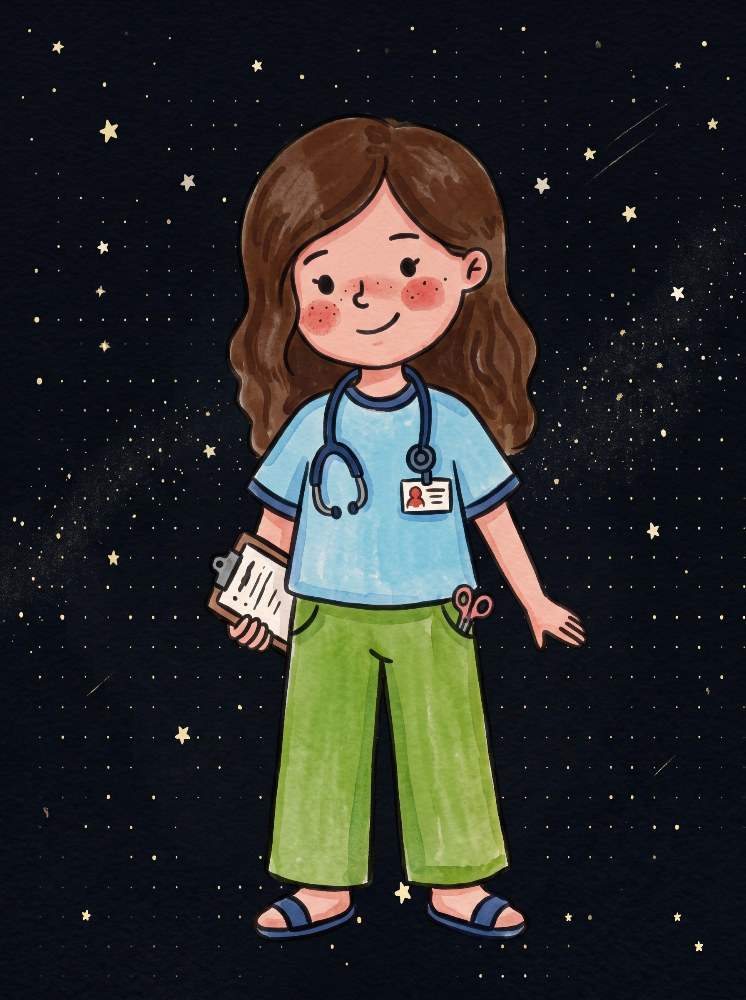
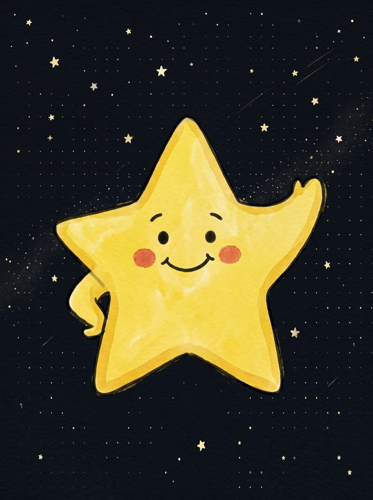
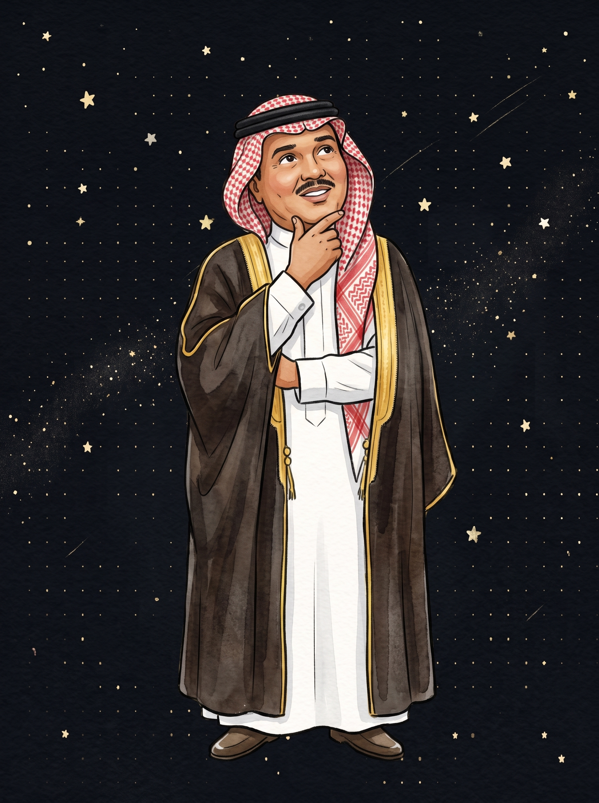
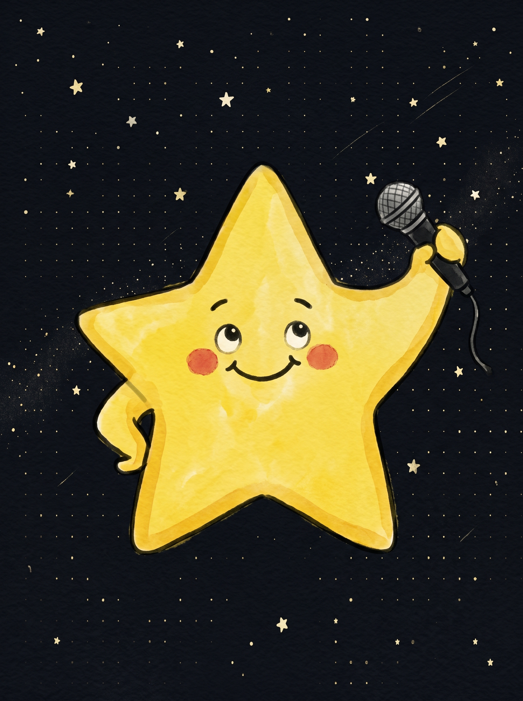
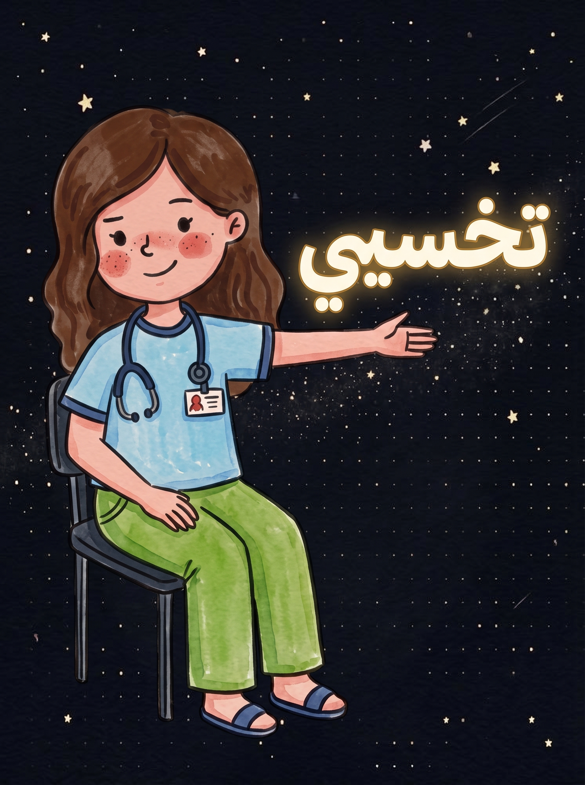
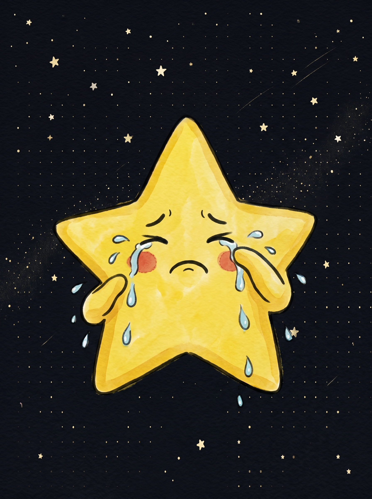

Dream Killer

نجمه

تعجبيني في غرورك واعتزازك 🤩
و تتعبيني في ميولك وانحيازك 😒
و تتعبيني في ميولك وانحيازك 😒


محطمة المواهب بنفس الوقت نجمه
الاسم يتغير في اي وقت دقيقه وثانيه
بس العطا منك ثابت وكبير حجمه
يبقى اثره جميل طوال الحياه الفانيه
غير الشاهي اللي يسبب للراس هجمه
هل من الممكن نذوق العريكه الثانيه ؟

